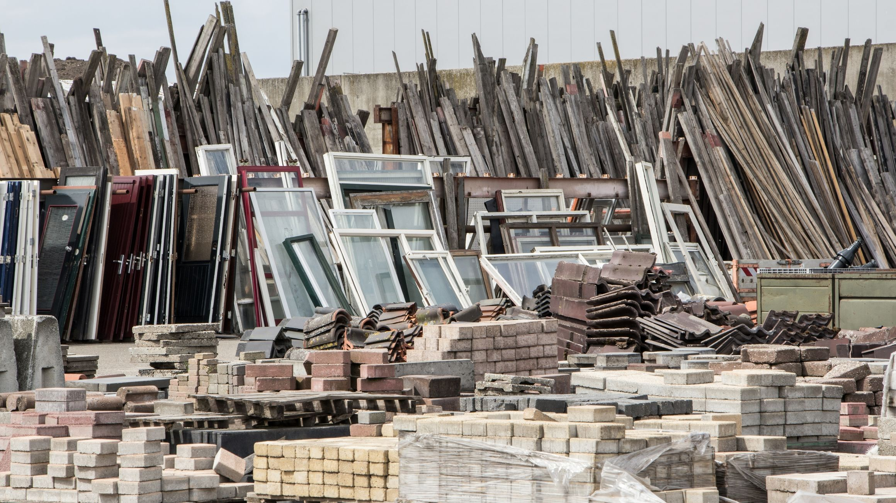

装修垃圾 Construction Waste


定义 Definition
装修垃圾是指建设、施工单位或个人对各类建筑物、构筑物、管网等进行建设、铺设或拆除、修缮过程中所产生的渣土、弃土、弃料、淤泥及其他废弃物。
Construction waste refers to debris, excavated soil, discarded materials, sludge, and other waste generated during the construction, installation, demolition, or renovation of buildings, structures, pipelines, and other facilities by construction companies, contractors, or individuals.
垃圾处理方法 Waste Management Methods
装修垃圾和生活垃圾应分别收集，并将装修垃圾袋袋装后投放到指定的装修垃圾堆放场所。
Construction waste should be collected separately from household waste and must be bagged before disposal at designated construction waste disposal sites.
例子 Examples
碎马桶、碎石块、碎砖块、废砂浆以及弃料。
Broken toilets, crushed stones, broken bricks, waste mortar, discarded construction materials, etc.
上一篇：大件垃圾
下一篇：电子废弃物